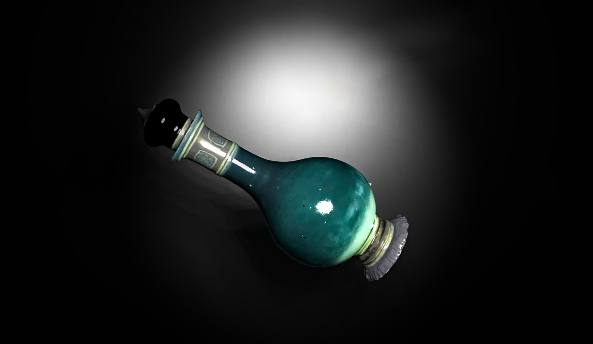

The moment he crosses the threshold, the air grows heavy and still. Sound seems swallowed—the clang of his boots on stone muffled, his breath faint like smoke in a storm.
The tunnel opens into a wide, ruined chamber—once a grand hall, now crumbled and dark. Broken tables and rusted armor lie scattered across the floor. Cracks in the walls pulse faintly with a sickly green glow, like veins feeding something unseen.
At the center stands a stone pedestal, shattered. Around it, the floor bears ancient carvings of roots twisting into dwarven runes—some scratched out, others warped.
Suddenly… a whisper echoes—not in the air, but in Brulgwyn’s mind:
““You seek what was buried… will you bleed to reach it?””
Brulgwyn’s grip tightens on his warhammer. The Hollow is aware.
With a 9, Brulgwyn narrows his eyes at the glowing runes, the pedestal, and the twisted root-like carvings. The aura here is clearly magical, but the exact purpose or nature of it escapes him. However, a few things are clear:
Then—he hears it again. A whisper. Louder. Clearer.
““One must feed the roots… to reach their heart.””
As those words crawl through his thoughts, the carvings around the pedestal pulse faintly, almost like they’re reacting to his presence.
Brulgwyn uses his final Elixir of Warding Shadows. Its silvery liquid shimmers as he drinks it—cool as ice, but burning with energy that rushes through his veins.
For the next hour, Brulgwyn is wreathed in a faint, protective aura. Shadows seem to bend around him, and darker magics recoil ever so slightly from his presence.
“Effect Active: Grants advantage on saving throws vs. necrotic, illusion, and fear effects for 1 hour.
As the elixir takes hold, the carvings around the pedestal flare brighter, the whisper returning with a shiver of cold wind through the ruined hall:
““You carry the Last Light… but the Hollow is deep.””
The room goes still. Then, a distant sound—like stone grinding far below.
Somewhere beneath you, a path has opened.
(18 + 1 = 19) — A sharp roll! Brulgwyn’s warrior instincts are as keen as ever.
As he steadies his breath and listens, the faint grinding sound echoes again—and this time, he spots it:
Near the northern wall, behind a collapsed archway, a section of the floor has shifted downward, revealing a narrow spiral stair carved from old stone. The carvings near the pedestal dim again, almost like they’ve served their purpose.
The stairwell winds deep beneath the ruined hall, where no torchlight reaches.
A faint, earthy scent rises—old roots, damp earth, and something… wrong. It feels like the Hollow is inviting him down.
Brulgwyn lights a torch, the flame casting flickering shadows across the crumbling hall. The warmth of the fire contrasts with the chill in the air, a quiet warning of the unknown depths ahead.
He steps toward the spiral stair, the scent of damp earth growing stronger as he descends. The stairwell is narrow, carved into the stone bedrock of the mountain,
winding down in slow, deliberate turns. The air grows heavier the further he goes, f illed with the sound of dripping water and distant, unsettling whispers.
The light from the torch reveals strange markings on the walls—almost like roots, twisting in spirals and knotting into shapes that look disturbingly like faces. Faces that seem to watch as he moves.
At the bottom of the stairwell, the tunnel opens into a wide chamber, the ceiling so high it’s almost swallowed by darkness. In the center of the room, a stone altar stands, its surface covered in ancient moss and roots that seem to pulse with a faint, eerie glow.
At the altar’s base, a large stone door—seemingly untouched by time—looms, its surface covered in faded symbols. The symbols seem to shift as the torchlight f lickers, forming new runes.
But something doesn’t feel right. There’s an oppressive energy here. The Hollow Heart may be closer than ever.
Brulgwyn cautiously steps forward, his torchlight flickering as he approaches the stone altar. The roots and moss that cling to it pulse faintly, almost like the heartbeat of the Hollow itself. His senses heighten as he examines the altar and the stone door that stands before him.
The altar is ancient, carved with intricate patterns—dwarven runes interwoven with symbols of decay and growth. It seems to be both a sacred offering place and a corrupting force, built in reverence to something powerful and dark.
The stone door, however, stands out. It’s nearly flawless, despite its age. The surface is smooth, covered in shifting symbols that change with each flicker of the torchlight, as if reacting to Brulgwyn’s presence. The air around it feels charged, thick with untold magic.
With a 5, the symbols on the door remain cryptic and elusive, their meaning just beyond Brulgwyn's understanding. While he recognizes some of the dwarven script and symbols, they seem distorted, almost as if corrupted by time or dark magic.
The words appear to be both ancient and foreign, too twisted for him to decipher fully. The more he looks, the more the symbols seem to shift, making his head ache slightly.
However, he does pick up one fragment of a word among the tangled runes: "Root".
Natural 20! Brulgwyn’s eyes scan the altar with the precision of a seasoned warrior driven by purpose—and this time, the Hollow cannot hide its secrets.
As he kneels and brushes aside some of the moss, his hand grazes a carved root pattern unlike the others. Pressing it, there's a faint click, and part of the altar shifts, revealing a hidden recess.
Inside lies a small stone carving shaped like a twisted tree—its roots entangled around a gemstone shaped like a heart. The roots pulse with the same eerie glow as the ones around the altar. More importantly, carved along its base are clear, untwisting runes, readable now:
“"To pass into the Hollow Heart, bear the Root and speak the Promise."”
As Brulgwyn takes the carving, the stone door begins to vibrate softly, symbols pausing their shifting for a moment—as if waiting.
With a 3, Brulgwyn furrows his brow, reaching into his memories for any dwarven rite or ancestral vow... but all he finds are fragments—hymns half-remembered, oaths whispered in stone halls, and echoes of words long lost.
The phrase “Speak the Promise” remains unclear. He knows it's important, maybe tied to some kind of sacred vow or personal oath, but its exact form escapes him. Still, as he grips the stone carving of the Root, a strange certainty fills his heart—not from knowledge, but from his conviction.
He remembers his people. Their faces. The sound of their coughing. The fading warmth of the forge fires. Their hope now rests with him.
And perhaps… that is the promise.
Though the religious meaning eluded you, you sensed something deeper—your personal vow to save your village may be the key
The stone door before you stands still, runes pulsing faintly, as though waiting for your next action.